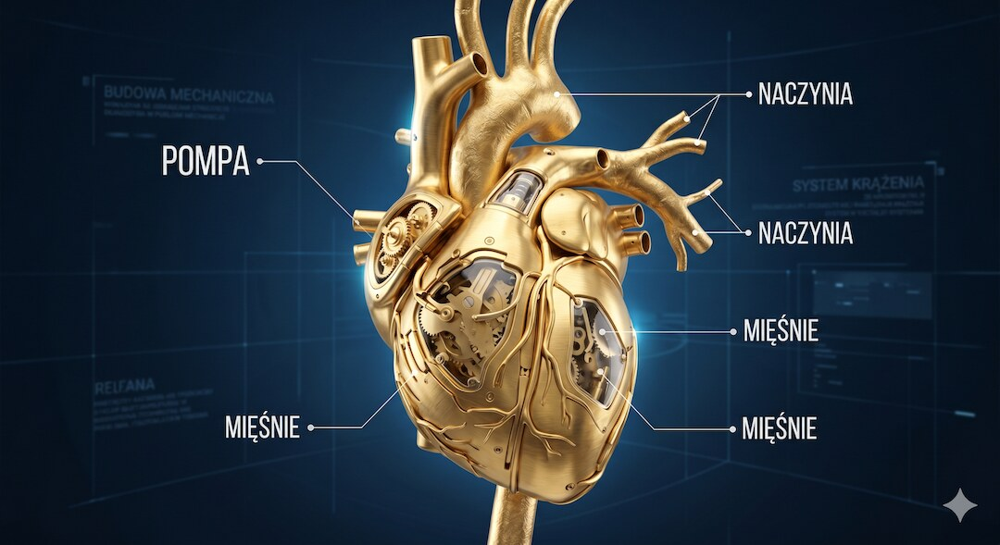
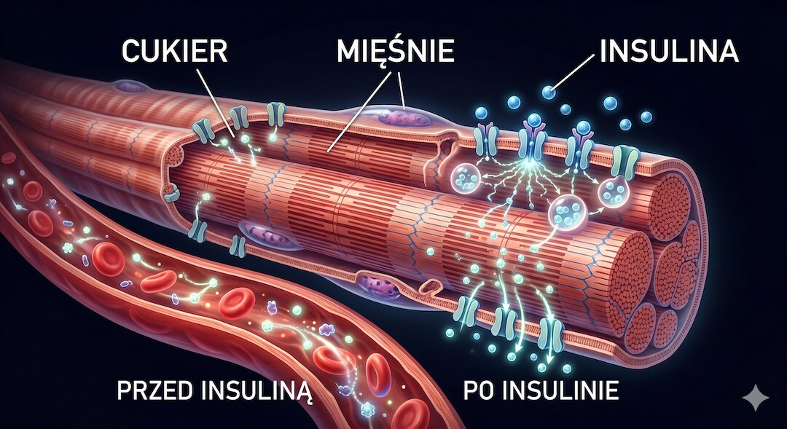
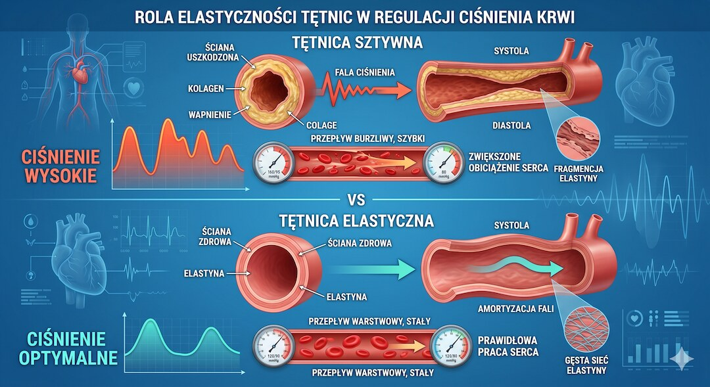
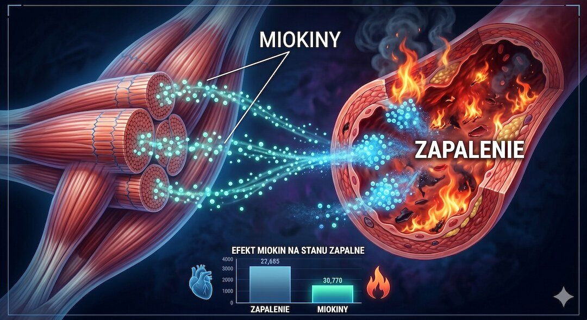
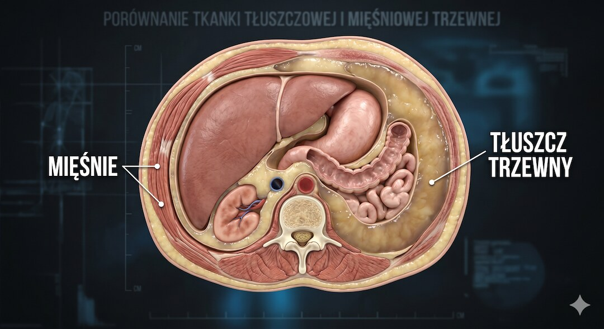
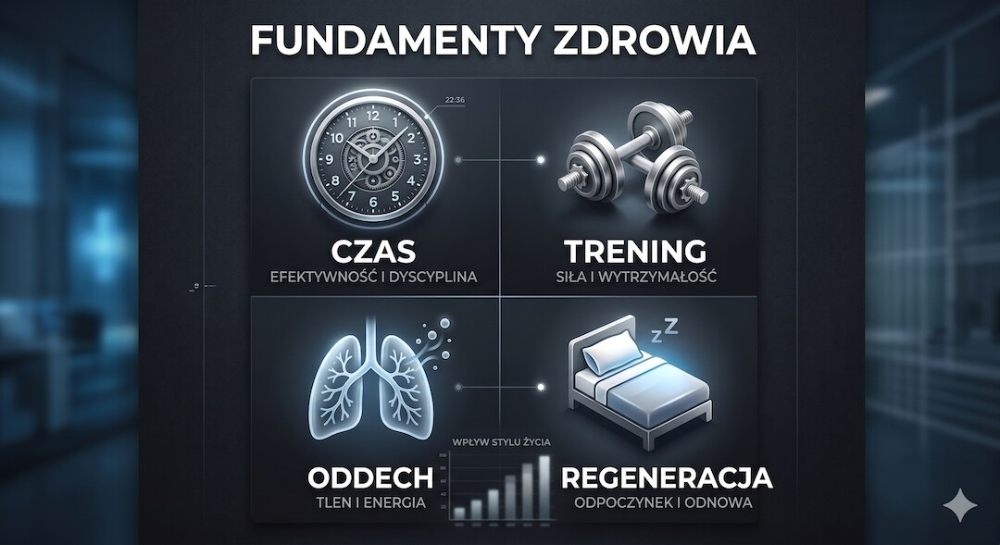

Trening dla serca nie kończy się na marszu, rowerze i bieganiu. Ćwiczenia oporowe wspierają siłę, glikemię, ciśnienie i skład ciała, dlatego są częścią zaleceń aktywności. Nie „remontują” mechanicznie naczyń i nie gwarantują ochrony przed zawałem; działają jako jeden z elementów profilaktyki obok leczenia, diety, snu i niepalenia.
Szybka odpowiedź
Trening siłowy może wspierać zdrowie serca, ponieważ pomaga kontrolować ciśnienie, glukozę, masę mięśniową i tłuszcz trzewny. Nie daje jednak gwarancji ochrony przed zawałem. Po 50-tce zacznij od umiarkowanych obciążeń, prawidłowego oddechu i stopniowej progresji, szczególnie jeśli masz chorobę serca lub nadciśnienie. Przerwij trening przy bólu w klatce, duszności lub zawrotach głowy.
Kluczowe wnioski
Trening siłowy może wspierać zdrowie sercowo-naczyniowe, lecz nie czyści naczyń i nie zastępuje leczenia.
- Trening oporowy może umiarkowanie poprawiać ciśnienie, glikemię i skład ciała, ale wielkość efektu jest indywidualna.
- Skurcz mięśni zwiększa wychwyt glukozy; nie oznacza to mechanicznego „czyszczenia” naczyń.
- Miażdżyca ma wiele przyczyn, dlatego ruch uzupełnia kontrolę lipidów, ciśnienia, palenia i leczenie.
- Najlepszy plan łączy trening oporowy, aktywność aerobową i mniej siedzenia, zgodnie ze sprawnością.
Serce jako pompa: dlaczego siła mięśni ma znaczenie?
Serce pompuje krew, a pracujące mięśnie zwiększają chwilowe zapotrzebowanie na tlen. Regularny trening poprawia zdolność wykonania tej samej pracy przy mniejszym odczuwanym wysiłku. Słabe mięśnie nie powodują jednak automatycznie sztywnienia tętnic, a ich wzmocnienie nie usuwa blaszki miażdżycowej.
Metaanaliza z British Journal of Sports Medicine łączyła ćwiczenia wzmacniające z niższą umieralnością, lecz opierała się głównie na danych obserwacyjnych. To sygnał wspierający zalecenia, a nie dowód, że trening przebuduje serce każdej osoby lub samodzielnie zapobiegnie zawałowi.

Jak trening siłowy wpływa na glukozę i naczynia?
Przewlekle podwyższona glikemia może uszkadzać śródbłonek i zwiększać ryzyko sercowo-naczyniowe. Podczas skurczu mięśnie pobierają więcej glukozy, a regularny ruch może poprawiać wrażliwość insulinową. Nie oznacza to jednak ochrony „bez insuliny” ani pewnego zapobiegania cukrzycy.
Efekt pojedynczej sesji jest przejściowy, dlatego liczy się regularność oraz cały plan leczenia. Trening nie sprawia też, że naczynia pozostają zawsze gładkie i drożne. Powiązane mechanizmy omawiamy w artykule o treningu siłowym po 50-tce.

Jak trening oporowy wpływa na ciśnienie krwi?
Podczas serii ciśnienie rośnie, szczególnie przy dużym ciężarze i wstrzymywaniu oddechu. Po wysiłku u części osób występuje przejściowe obniżenie ciśnienia, a regularny trening może umiarkowanie poprawić wartości spoczynkowe. Średniej z badań nie porównuj z dawką leku i nie odstawiaj leczenia po rozpoczęciu ćwiczeń.
Adaptacja może obejmować poprawę funkcji śródbłonka, lecz naczynia nie stają się przez to odporne na pękanie. Największy sens ma połączenie ruchu z domowymi pomiarami oraz leczeniem czynników ryzyka; zobacz Centrum Nadciśnienia po 50-tce.
- Ciśnienie podczas serii: rośnie, dlatego unikaj parcia i wstrzymywania oddechu.
- Ciśnienie spoczynkowe: może umiarkowanie poprawić się przy regularnym planie.
- Kontrola: mierz ciśnienie w spoczynku, nie bezpośrednio po serii.
- Leczenie: ćwiczenia uzupełniają leki i zalecenia, nie zastępują ich samowolnie.

Stan zapalny: gaszenie pożaru w organizmie?
Zawał może być skutkiem pęknięcia lub erozji blaszki miażdżycowej i zakrzepu. Zapalenie uczestniczy w tym procesie, ale nie jest jedyną przyczyną. Pracujące mięśnie wydzielają miokiny, a regularna aktywność może wpływać na profil zapalny pośrednio także przez skład ciała i metabolizm.
Określenie mięśnia jako narządu wydzielniczego opisuje sygnały powstające podczas skurczu. Nie oznacza, że większy biceps jest „fabryką leków” ani że sama masa mięśniowa zabezpiecza tętnice. Liczy się regularny ruch oraz równoległa kontrola cholesterolu, ciśnienia, glikemii i palenia.

Czy trening siłowy pomaga ograniczać tłuszcz trzewny?
Tkanka tłuszczowa trzewna wiąże się z wyższym ryzykiem metabolicznym. Trening oporowy może pomagać zachować mięśnie podczas redukcji masy ciała, lecz sam przyrost mięśni zwykle tylko nieznacznie zmienia spoczynkowy wydatek energii. Najlepsze wyniki daje połączenie ruchu z dopasowaną energią i jakością diety.
Obwód pasa jest użytecznym wskaźnikiem do obserwacji trendu, ale jego mała zmiana nie „dramatycznie” poprawia rokowania sama w sobie. Oceniaj równolegle ciśnienie, lipidy, glikemię, sprawność i nawyki, a nie tylko centymetry.

Jak zacząć trening siłowy dla serca po 50-tce?
Nie musisz od razu podnosić stu kilogramów. Dla Twojego serca najważniejsza jest regularność. Zacznij od prostych ruchów, które naśladują codzienne czynności. Jeśli startujesz od zera, dobrym początkiem będzie też lekki plan z działu Rusz się po 50-tce. Twój układ krwionośny potrzebuje czasu, by przystosować się do nowego wysiłku.
Przy ćwiczeniach submaksymalnych oddychaj swobodnie i unikaj długiego parcia z zamkniętą głośnią, szczególnie przy nadciśnieniu. Wydech podczas trudniejszej fazy bywa prostą wskazówką, ale nie czyni treningu automatycznie „najbezpieczniejszą” formą ruchu dla każdej osoby.
- Częstotliwość : 2 razy w tygodniu po 30 minut.
- Obciążenie : Takie, by wykonać 10 powtórzeń z zapasem.
- Tempo : Powolne, kontrolowane ruchy.
- Przerwy : 2 minuty między seriami na uspokojenie tętna.

Zobacz też:trening siłowy, dieta po 50-tce, sen i regeneracja oraz badania krwi.
Najczęściej zadawane pytania
Odpowiedzi pomagają odróżnić bezpieczny start od sytuacji wymagających wcześniejszej konsultacji.
Czy siłownia nie jest zbyt obciążająca dla serca po 50-tce?
Dobrze dobrany trening oporowy jest zwykle możliwy, ale choroba serca, ból w klatce, omdlenia lub niekontrolowane ciśnienie wymagają wcześniejszej konsultacji i indywidualnych zaleceń.
Jakie badania kardiologiczne zrobić przed siłownią?
Nie każdy bezobjawowy dorosły potrzebuje EKG lub próby wysiłkowej przed lekkim treningiem. Zakres oceny zależy od objawów, rozpoznanych chorób, leków i planowanej intensywności. Ciśnienie warto znać; przy bólu w klatce, omdleniu lub duszności najpierw skonsultuj się z lekarzem.
Ile muszę ćwiczyć, żeby poczuć różnicę?
Sprawność i tolerancja wysiłku mogą poprawiać się w pierwszych tygodniach, ale tempo jest indywidualne. Oceniaj technikę, objawy, ciśnienie i regularność zamiast oczekiwać stałego procentu redukcji ryzyka.
Czy cardio jest lepsze od siłowni?
Nie trzeba wybierać. Trening aerobowy i oporowy przynoszą częściowo różne korzyści, dlatego zalecenia łączą oba rodzaje aktywności oraz ograniczanie siedzenia. Proporcje dobierz do zdrowia, sprawności i celu.
Pomiary domowe, ruch, dieta DASH i zasady bezpiecznego treningu znajdziesz w Centrum Nadciśnienia po 50-tce.
Kiedy najpierw skonsultować trening?
Przed rozpoczęciem treningu skonsultuj plan, jeśli masz niestabilną chorobę serca, niekontrolowane nadciśnienie, omdlenia, ból w klatce piersiowej albo duszność przy niewielkim wysiłku.
Jeśli chcesz przełożyć ochronę serca na konkretne ćwiczenia, zacznij od progresji i zasad bezpieczeństwa w Centrum Treningu Siłowego po 50-tce.
Źródła
Źródła obejmują stanowiska dotyczące treningu oporowego, ciśnienia, glikemii i zdrowia sercowo-naczyniowego. Opisane efekty są średnimi z badań, nie gwarancją dla jednej osoby.
- American Heart Association (2023) — resistance exercise in cardiovascular health
- British Journal of Sports Medicine — Muscle strengthening and mortality
- Mayo Clinic — Strength training for heart health
- JACC — Resistance training and cardiovascular risk
- AHA Journals — Exercise and Cardiovascular System
- Nature Reviews Cardiology — Exercise benefits
- Harvard Health — Strength training benefits
Uwaga: Artykuł ma charakter informacyjny i edukacyjny. Nie zastępuje konsultacji lekarskiej, diagnozy ani leczenia.
Jeśli chcesz zrozumieć, co dzieje się głębiej niż na poziomie tętna, zobacz też, jak trening siłowy po 50-tce wspiera komórki i DNA.